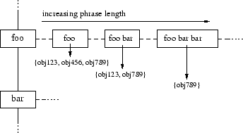

![\includegraphics[width=2.6in]{figures/struct_inval}](img3.png) |
James Gardner
March 14, 2007
This document outlines the Architecture and Coding Details of NNexus
Users of NNexus apply the following basic functionality to their corpus: When an entry is rendered (either at display time or during offline batch processing), the text is broken down into tokens and scanned for words that invoke concepts that have been defined in other entries. These words (or word tuples) are ultimately turned into hyperlinks to the corresponding entries in the output rendering.
In addition, when new concepts are added to the collection (or the set of concept labels otherwise changes), entries containing potential invocation of these concept labels can be invalidated. This allows entries to be re-scanned for links, either at invalidation time or before the next time they are displayed. NNexus uses a special structure called the invalidation index to facilitate this.
When an article is submitted, NNexus starts by pulling out unlinkable (i.e., equation) environments and other portions of text that need to be escaped. These portions are replaced by special tokens. The engine then breaks the text of an entry into a single words/tokens array to iterate through. This array form makes it easy to associate a particular word with a unique integer position.
The tokenized text of the entry is then iterated over. The tokens and token tuples (phrases) are then searched to determine candidate links using the concept hash. After the candidate links are determined they are filtered based on linking policies. The candidates are then compared by ``classification proximity''. The object with the highest score is then the only object left in the match-candidates array. The ``winning'' candidates for each position are then substituted into the original text and the linked document is then returned.
The implementation details follow. NNexus must have a connection to a MySQL server. The database contains link, object, configuration, and classification information. The concept map, invalidation index, and classification hierarchy are all stored in the database.
NNexus indexes the entries by building a concept map that maps all of the concept labels in the corpus to the entries which define these concepts. The process of building the concept map follows. When adding a new object (entry) to NNexus a list of terms the object defines, synonyms, and a title are provided (the concept labels).
|
 |
The concept labels are kept in a chained-hash index structure, called the concept map. This structure contains as keys the words that occur as the first word of some concept label. Following these words (retrieving the value for the key) leads to a list of full concept labels starting with that particular word. To facilitate efficient scanning of entry text to find concept labels, the map is structured as a chained hash, keyed by the first word of each phrase placed in it. This structure is shown graphically in Figure 2.
When a new object is added, NNexus also utilizes an invalidation index to determine which articles may possibly link to the new object and need to be ``invalidated.'' The invalidation index stores term and phrase content information for all entries in the corpus. It is an adaptive index in that longer phrases are only stored if they appear ``frequently'' in the collection. There is no limit to how long a stored phrase can be; however, very long phrases are extremely unlikely to appear (the falloff in occurrence count by phrase length follows a Zipf distribution).
|
|
The invalidation index is a variation on a normal document inverted index structure and works basically the same way for lookups. However, instead of just being keyed on single-word terms, it is keyed on phrases (which are usually but not always single-word). For each term or phrase in the index, there is a list of objects which contain that term or phrase. These lists are called postings lists. A sketch of the invalidation index is shown in Figure 3.
The invalidation index has a special property that for every phrase indexed, all shorter prefixes of that phrase are also indexed for every occurrence of the longer phrase. This allows us to guarantee that occurrences of the shorter phrases or single terms will be noticed if we do a lookup using these shorter tuples as keys. The importance of this will be made clear later.
The invalidation index exists for a single purpose: so that when concept labels are added to the collection (or when they change), we can determine which entries are highly likely to be effected by the change. Further, the invalidation index allows us to do this in a way that never misses an entry that should be re-examined, but does not catch too many irrelevant entries (false positives).
When a lookup is done for a particular phrase in the invalidation index, the object IDs returned are updated (invalidated).
Cwd; DBI; Data::Dumper; Encode; Switch; Time::HiRes; Unicode::String; XML::SAX; XML::Simple; XML::Writer;To install any of these modules run perl -MCPAN -e shell. In the shell type install Module::Name. This should install the latest versions of the modules. Note: It is very important to have the latest versions of the XML related modules as all information exchange with NNexus is performed using a strict XML syntax. In order for NNexus to understand all the XML the latest versions of the XML parsers must be installed.
Charset.pm Classification.pm Concepts.pm Config.pm Crossref.pm DB.pm Domain.pm Indexing.pm Latex.pm Linkpolicy.pm Morphology.pm NNexusSAXHandler.pm Object.pm Response.pm Util.pm Utilities.pm
The next few subsections (in alphabetical order for easy reference) cover the details and interactions of these modules.
\"{o}). These functions are necessary for looking up concepts independent of character set used by the client.
Details of almost all of the functions in this module are to come.
\large tags to be visible to the automatic linker. We hope this
module becomes either obsolete or greatly reduced soon. The use of regexp
to parse the Latex documents works for now, but a more configurable option
would be to use LaTeX::TOM or another latex parsing method.
![\includegraphics[width=5.5in]{figures/NNexusModuleDep}](img5.png)